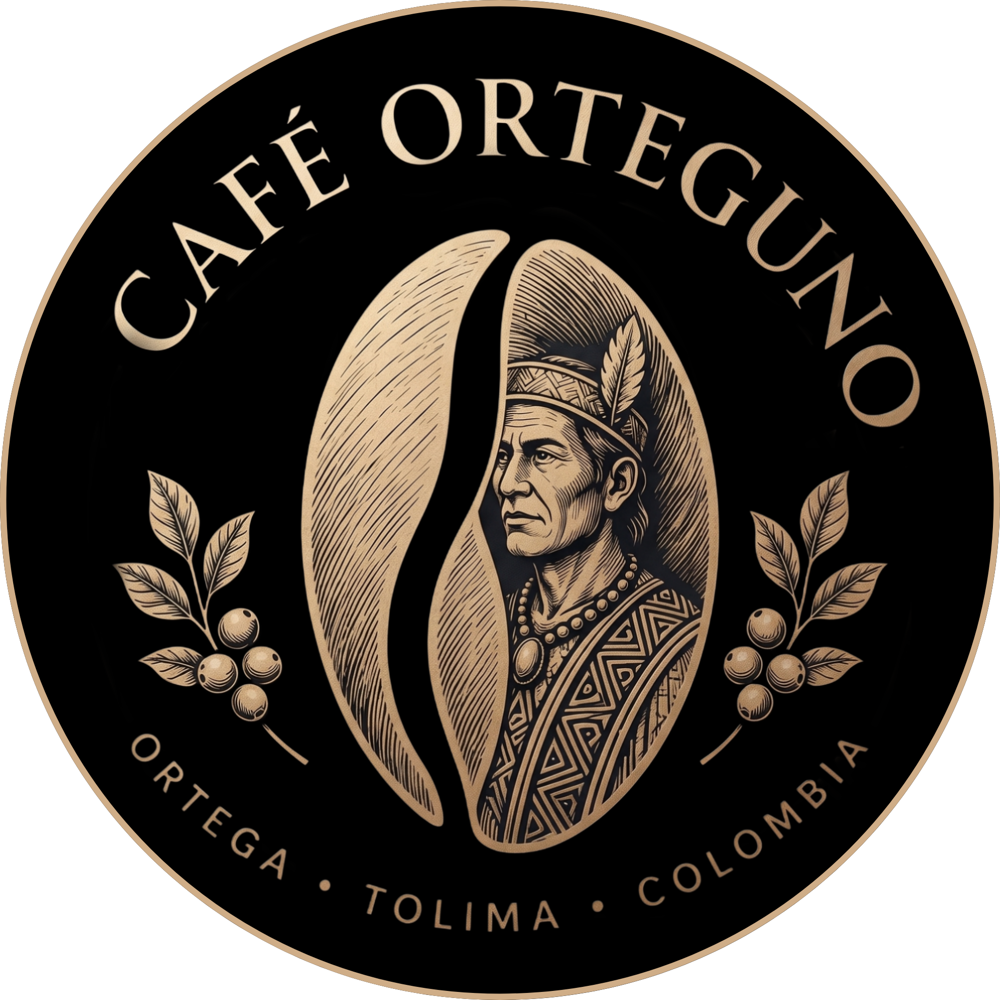

Café Orteguno
Ortega Tolima - Vereda La Bandera
📍 Origen
▼
Cultivado por campesinos e indígenas Vereda La Bandera, Ortega, Tolima. Estas tierras están impregnadas de la herencia indígena Pijao. Sus suelos ricos en nutrientes y el microclima de la región otorgan a nuestro café notas únicas y un carácter inigualable.
⛰️ Altura
▼
Cultivado a 1.700 metros sobre el nivel del mar. A esta altitud, el grano madura más lentamente, lo que permite que desarrolle mayor densidad, azúcares complejos y una acidez brillante y prolongada en taza.
🌱 Variedad
▼
Una cuidadosa mezcla de Castillo y Senicafé. La variedad Senicafé aporta dulzor y notas afrutadas, mientras que el Castillo garantiza cuerpo y resistencia en los cultivos, creando un balance perfecto de sabor y sostenibilidad.
⚙️ Proceso
▼
Utilizamos un proceso de Lavado Tradicional. Los granos en cereza reposan durante 24 horas de fermentación en tanque y después se trilla y se lava durante 24 horas, en un total de 48 horas, tiempo milimétricamente medido para exaltar las notas florales y mantener una taza extraordinariamente limpia.
☀️ Secado
▼
El grano es secado de forma natural al sol en marquesina con ventilación al aire libre durante de 8 a 10 días. Este método lento y protegido de la lluvia asegura que la humedad del café disminuya de manera uniforme, prolongando la vida útil del grano verde y estabilizando sus sabores.
🏡 Las Fincas
▼
Este café especial ha sido recolectado en diferentes fincas:
- Finca San Francisco
- Finca El Rincón
- Laureles y Libertad
- El Tesoro
- La Isla
- La Subida
Cada grano es recolectado a mano en su punto exacto de maduración por familias caficultoras comprometidas con la calidad artesanal.
Nuestra Labor
 Recolección
Recolección
 Recolección
Recolección
 Recolección/span>
Recolección/span>
 Recolección
Recolección
 Nueva Etiqueta
Nueva Etiqueta
 Nueva Etiqueta
Nueva Etiqueta
Lote Especial Limitado
Fecha de Recolección:
15 al 30 de Junio, 2026